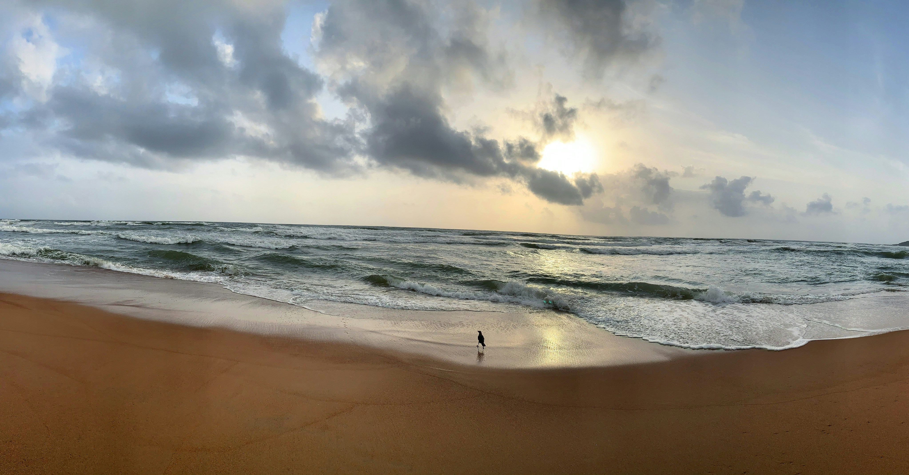

New Delhi
Delhi, the capital of India, is a vibrant mix of historical landmarks and modern infrastructure. It is home to iconic sites like the Red Fort, India Gate, and the Lotus Temple, representing its rich cultural heritage. The city also serves as a political, economic, and cultural hub, drawing people from all over the country and the world.
Kashmir
Kashmir, often called "Paradise on Earth," is renowned for its breathtaking natural beauty, including snow-capped mountains, lush valleys, and serene lakes like Dal Lake. It has a rich cultural heritage, with influences from Hindu, Buddhist, and Muslim traditions.
Uttarakhand
Uttarakhand, located in the northern part of India, is known for its stunning Himalayan landscapes, spiritual significance, and rich biodiversity. It is home to famous pilgrimage sites like Haridwar, Rishikesh, and the Char Dham (Yamunotri, Gangotri, Kedarnath, and Badrinath). The state's natural beauty, with its forests, rivers, and hill stations like Nainital and Mussoorie, makes it a popular destination for both spiritual seekers and nature lovers.
Gujrat
Gujarat, a western state of India, is known for its vibrant culture, historic sites, and diverse landscapes, from the Rann of Kutch to the Saurashtra coastline. The state is the birthplace of Mahatma Gandhi and is famous for its rich heritage in textiles, handicrafts, and the colorful festival of Navratri. Gujarat is also an economic powerhouse, with a thriving industrial sector and a growing tourism industry.
Uttar Pradesh
Uttar Pradesh, located in northern India, is a state rich in history, culture, and spirituality, home to iconic landmarks like the Taj Mahal in Agra and the sacred city of Varanasi. It is a hub for Hindu pilgrimage, with sites such as Mathura, Ayodhya, and Kashi attracting millions of devotees each year. The state's diverse heritage also includes Mughal architecture, ancient temples, and a thriving traditional arts scene.
Goa
Goa, a small coastal state in western India, is famous for its pristine beaches, vibrant nightlife, and Portuguese colonial architecture. Known for its laid-back atmosphere, it attracts both domestic and international tourists seeking relaxation, adventure, and cultural experiences. Goa also has a rich history, blending Hindu traditions with Catholic influences, reflected in its festivals, churches, and cuisine.

Kerela
Kerala, located on the southwestern coast of India, is renowned for its lush landscapes, tranquil backwaters, and rich cultural heritage. It is famous for its Ayurvedic treatments, pristine beaches, hill stations like Munnar, and vibrant festivals like Onam and Theyyam. The state's unique blend of natural beauty, tradition, and a high standard of living has earned it the nickname "God's Own Country."
Madhya Pradesh
Madhya Pradesh, located in central India, is known for its rich history, ancient temples, and wildlife sanctuaries. The state is home to UNESCO World Heritage Sites like the Khajuraho Temples and Sanchi Stupa, as well as the iconic Kanha and Bandhavgarh national parks. Its vibrant cultural scene and historical significance make it a key destination for those interested in India's heritage and natural beauty.